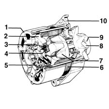

Introduction - CURRENT GENERATOR
- Path
- Descriptions > 55 ELECTRICAL EQUIPMENT > 5530 CURRENT GENERATOR > Introduction - CURRENT GENERATOR
- Kind
- system description
- Applies to
- all engines; all production periods
- Interactive page
- https://sloeber94.github.io/elrnDB-a156/en/#/3239229
Applies to: all engines; all production periods
The current production system consists of the battery and the alternator.
Battery
The battery is the sealed, low maintenance lead type. The elements are sealed with pressure plugs with an anti-infiltration system and a gas evacuation device involving the gas/fluid separator plugs.
Alternator
The alternator should provide a sufficient current for the on-board network, at all operating speeds, for the battery to remained charged. The alternator produces an alternating current which is converted into a direct current by a special rectifier.
The alternator shaft (rotor) is turned by the crankshaft by means of a belt. When supplied with an excitation current, the rotor sets up a magnetic field that induces an alternating current in the fixed coil (stator). A diode rectifier bridge, at the back of the alternator, transforms the alternating current into a direct current which is sent to recharge the battery. A voltage regulator maintains the current supply at a constant voltage of 14 V for all engine load and speed conditions.
A small radial fan, fixed to the pulley, cools the alternator.

1, Casing 2, Rectifier cooler 3, Power diode 4, Exciter diode 5, Regulator 6, Stator 7, Rotor 8, Fan 9, Pulley 10, Support